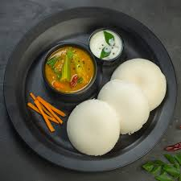

Idli and Sambar
Calories: 350 kcal
Health Benefits: Rich in healthy fats, high in fiber, great source of protein and vitamins.
Idli:

Ingredients:
- 1 cup rice (preferably parboiled rice)
- 1/4 cup split urad dal (black gram)
- 1/4 tsp fenugreek seeds (optional)
- Water (for soaking and grinding)
- Salt (to taste)
- Oil (for greasing)
Instructions:
- Soak rice,fenugreek seeds and dal seperately for 5 hours.
- Grind soaked rice and dal seperately and add water when needed.
- Ferment the batter which id made from mixing the rice and dal batter overnight.
- Add salt and steam it with little oil in small molds.
- Let them cool for a few minutes and serve with sambar and coconut chutney!